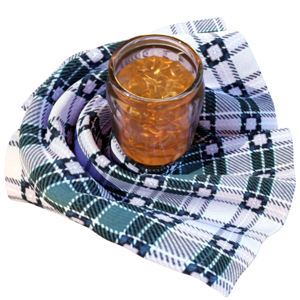

Marmalade 1.

The Seville Orange Marmalade.
This traditional Scottish preserve is also known as "Dundee Marmalade".
The recipe is taken from the Feill Cookery Book, wich was publised in 1907 and is freely available from the Internet Archive. (Page 207).
Ingredients
- 12 Seville oranges
- Juice of 2 large lemons
- 4 sweet oranges I 6 quarts water
- 12 lbs. white sugar
Steps
- Cut the oranges in thin slices and put them to soak in the water for 24 hours.
- Then boil in the same water for 2 hours ;
- boil the pips in a muslin bag with the rest, but take out before adding the sugar.
- Add sugar and boil another hour.
- Add the lemon juice, and boil now not more than another 1/2 hour. Will fill about 8 quart pots.
Mrs. Berthon.
From The Feill Cookery Book, publication date 1907
Contributor: University of Leeds Library
The Internet Archive